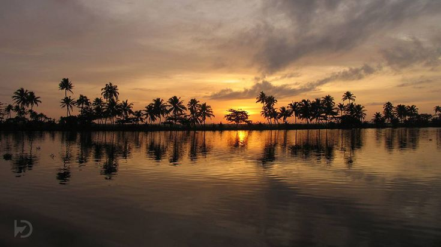
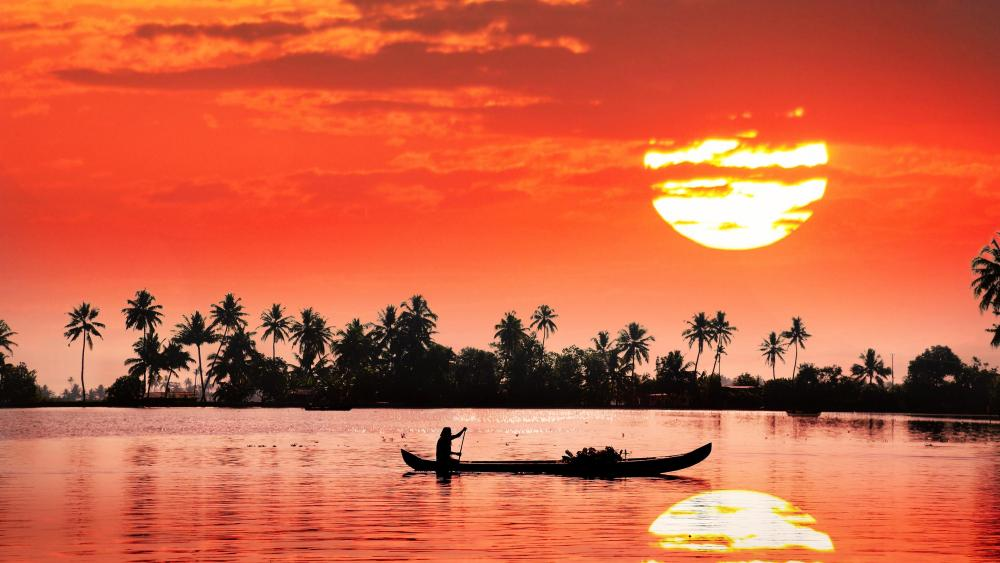

Kerala Tourism
Home
District
Login
Sign Up


Previous
Next
Welcome To God's Own Country
About
K
erala, popularly known as "God's Own Land," is a state located in the southern section of India. Having a population of nearly 33 million people, it is one of the smallest states in India but has a high population density. Kerala has a distinctive environment with hills, valleys, and rich vegetation because it is flanked by the Arabian Sea to the west and the Western Ghats to the east.
The natural beauty of Kerala is one of its most outstanding characteristics. The state is renowned for its tranquil beaches, tropical woods, and backwaters. Birds, fish, and otters are just a few of the many plant and animal species that call Kerala's backwaters home.
Another notable natural characteristic of Kerala is its tropical forests, with the Western Ghats serving as the home to numerous national parks and wildlife refuges. Elephants, tigers, leopards, and many different bird species can be found in these parks, along with a wide variety of other animals.
These parks offer guided tours that allow visitors to enjoy safaris, nature hikes, and bird watching. Kerala is a special state that offers the ideal synthesis of unspoiled natural beauty, diverse cultural heritage, and progressive values. Travelers from all over the world are drawn to it by its tranquil backwaters, stunning beaches, lush woods, and delectable cuisine.
The state is an inspirational place to visit and learn from because of its emphasis on education, gender equality, and social justice.
Tourist Spots
Check out about the tourist spot
Let's Travel
Sign Up
New User? Sign up here
Sign Up